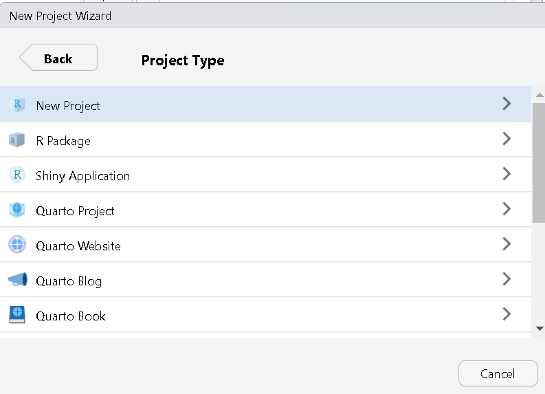
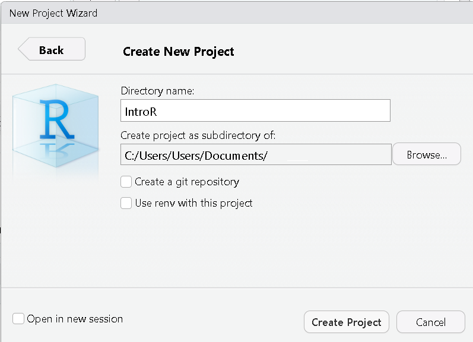
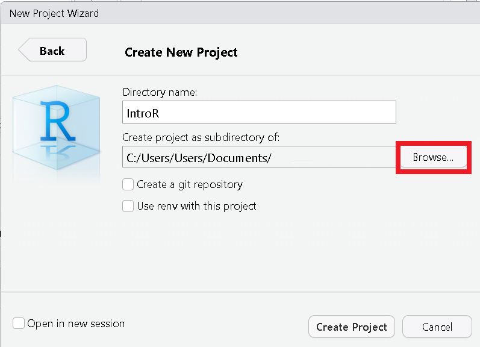
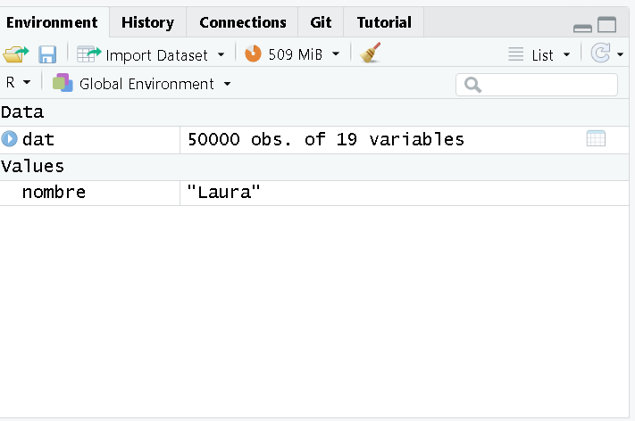

Introducción a R y Rstudio
Última actualización: 2025-03-12 | Mejora esta página
Hoja de ruta
Preguntas
- ¿Cómo se utilizan R y RStudio en el análisis de datos y la salud pública?
Objetivos
Al final de este taller usted podrá:
- Reconocer y hacer uso de R y RStudio.
- Conocer los tipos de datos y operados básicos en R.
- Comprender las estructuras básicas de datos en R tales como vectores y tablas de datos.
- Comprender el proceso de creación de funciones.
- Reconocer el proceso de importación, exportación y transformación de bases de datos con Tidyverse.
Pre requisito
Esta unidad no tiene prerequisitos
Tabla de contenido
- Módulo: Ciencia de datos en salud pública
- Unidad: Introducción a R y RStudio
- Tema 1: Introducción
- Tema 2: Instalación de R y RStudio
- Tema 3: Ambiente de RStudio
- Tema 4: Configuración de un proyecto en RStudio
- Tema 5: Tipos de datos y operadores en R
- Tema 6: Estructuras de datos en R
- Tema 7: Funciones
- Tema 8: Manipulación de datos con Tidyverse
- Unidad: Introducción a R y RStudio
Tema 1: Introducción
R es un lenguaje de programación especializado para análisis de datos, es de uso gratuito y software libre. Por otra parte, RStudio es un editor de R también disponible de manera gratuita. La diferencia entre R y RStudio radica en que en R es el lenguaje de programación en el que escribimos el código y RStudio es el ambiente de desarrollo que permite trabajar con R de manera más fácil y amigable.
En los últimos años el uso de R ha crecido en el ámbito académico y de la industria. R, además de ser un lenguaje de programación, es también un entorno para computación estadística y creación de visualizaciones. R y RStudio son herramientas esenciales para el estudio, análisis y toma de decisiones en salud pública, ya que permiten realizar análisis estadísticos detallados, modelar la propagación de enfermedades, visualizar datos de manera efectiva y automatizar tareas. Estas herramientas facilitan la manipulación y preparación de datos, fomentan la colaboración en proyectos de ciencia de datos, y la toma de decisiones basadas en evidencia. Además, son útiles en la formación y educación en análisis de datos para profesionales de la salud, áreas STEM y toma de decisiones.
Tema 2: Instalación de R y RStudio
Para instalar R y RStudio debemos ir a nuestro navegador de confianza. Allí vamos a buscar r-project, que es la página oficial de R (https://www.r-project.org/). Recordemos que este es un software de uso libre, no hay que hacer ningún pago por su descarga o uso.

Busca la opción de descarga “download R” y sigue las instrucciones.
Para instalar Rstudio debemos ir a https://posit.co/download/rstudio-desktop/ y buscar donde diga Install RSudio. Si tenemos Windows podemos dar click en el recuadro azul. Si es otro sistema operativo abajo encontraremos una lista con las diferentes opciones. Para instalar, sigue las instrucciones.

Recuerda ejecutar el archivo que se descargó siguiendo los pasos. Es recomendable que en el momento de la instalación elijamos la opción de dejar un acceso directo en el escritorio.
Para comprobar que la instalación fue satisfactoria y en general para hacer uso de R y RStudio debemos buscar en la ubicación que hayamos elegido en la instalación donde quedó Rstudio y dar doble clic o clic derecho y abrir. Lo primero que vemos al momento de abrir Rstudio es la siguiente pantalla:

Escribe 2+2 donde aparece el cursor y da enter, si te aparece el resultado 4 ¡Está todo listo para empezar!
Tema 3: Ambiente de RStudio
RStudio está compuesto por 4 secciones principales:

Editor (sección superior izquierda): en esta sección escribimos y editamos el código a través de la creación de Scripts . Esta sección es fundamental para la reproducibilidad del código. Este editor permite guardar el código para que sea usado en futuras ocasiones. El código puede ser ejecutado en esta sección posicionando el cursor de texto al final de la línea de código que se ejecutará; otra opción es seleccionando la misma y empleando el comando
Control+Enterpara Windows oCommand+Enterpara Mac.Entorno (sección superior derecha): en esta sección se pueden visualizar los objetos, datos y funciones creados o importados en el codigo que escribimos en los Scripts por ejemplo objetos como vectores, arreglos,
data.frameso tablas de datos, objetos gráficos deggplot, entre otros.Consola (sección inferior izquierda): esta sección es donde se ejecuta el código. No solo se ejecuta el código que hemos escrito en el editor, sino que también el código puede escribirse y ejecutarse aquí directamente presionando
Enter. Sin embargo, cuando el código se ejecuta directamente en la consola, no se almacenan los comandos que ejecutamos, cuando se cierra la sesión de R se pierde.Visualizador (sección inferior derecha): en esta sección se pueden visualizar los archivos en “
Files”, los gráficos en “Plots”, los paquetes que ya están instalados en “Packages”, la ayuda de R con información de los paquetes y el funcionamiento en “Help”, y páginas web en “Viewer”.
Tema 4: Configuración de un proyecto en RStudio
Una de las grandes ventajas de usar RStudio es la posibilidad de usar
los Proyectos en R (R Project)(indicado por un archivo
.Rproj) lo que permite organizar el espacio de trabajo, el
historial y los documentos fuente. Para crear un Proyecto en R, es
importante seguir los siguientes pasos:
Desafío
- Abrir RStudio y, en la esquina superior izquierda, seleccionar la pestaña File (Archivo) -> New Project… (Proyecto Nuevo).

- Se desplegará una ventana con encabezado New Project Wizard: Create Project, ahora se debe seleccionar New Directory (Directorio Nuevo).
En la ventana con encabezado New Project Wizard:Project Type, se debe seleccionar New Project 
En la ventana con encabezado New Project Wizard:Create New Project. En la casilla Directory Name (Nombre del Directorio) coloque el nombre deseado para su proyecto (e.g. “
IntroR”).
Hacemos clic en el botón Browse…. Para buscar la ubicación dentro del computador donde deseamos guardar el proyecto 
Creamos una nueva carpeta con el mismo nombre del proyecto (e.g. “
IntroR”), así como las subcarpetas que necesitamos para organizar nuestro trabajo y resultados: datos, scripts y figuras. Al final, el proyecto debería parecerse a esta imagen:
Tema 5: Tipos de datos y operadores en R
Tipos de datos
R tiene la capacidad de almacenar y procesar distintos tipos de datos. Entre estos se encuentran:
- Numéricos decimales
(double. Ej: 3.3) - Enteros
(integer. Ej: 3) - Caracteres
(character. Ej: Municipio, sexo o nombre.) - Booleanos o lógicos
(logic. Ej: FALSE, TRUE) - Tipo fechas
(date. Ej: 01/01/2022) - Datos
NA,NANeInf. La diferencia entreNA,NANeInfes queNAindica que hay dato faltante “missing”,NANsignifica “not a number”; es decir, hay información, pero es un error y el resultado no es numérico, por ejemplo0/0. Inf indica que hay operaciones cuyo resultado es infinito como por ejemplo1/0. Si se hace operaciones entre tipos variables se pueden obtenerInf.
Operadores matemáticos y lógicos
Los operadores son herramientas matemáticas que nos permiten realizar
diferentes tareas con los datos que tenemos disponibles; por ejemplo,
con el operador + podemos efectuar una suma o incrementar
un índice. Algunos de los operadores más utilizados en R son los
siguientes:
1. Operadores aritméticos (Ej: +, -,
*, que corresponden a suma, resta y multiplicación
respectivamente)
2. Operadores de comparación
(Ej: <, >, ==, >=, <=, !=) 3. Operadores
booleanos (& (and), | (or), ! (not))
Operadores de asignación <- y =
<- Este es un operador común en R para asignar un determinado valor a una variable y el alcance está dentro de la función y también fuera de ella.
Ejemplo
R
nombre <- "Laura"
Se abra creado un objeto en el ambiente global (ubiquelo en la
sección lateral derecha superior): 
= Este operador se utiliza para establecer un parámetro en un valor dentro de una función. El alcance está solo dentro de la función. La variable todavía contiene su valor original fuera de la función.
Tema 6: Funciones
Imaginemos una función como una especie de “caja mágica” que recibe ciertos datos o información como entrada y produce un resultado o respuesta específica como salida. Es como seguir una receta que toma ingredientes y como resultado tenemos un plato delicioso.
Para qué podamos utilizar una función debemos proporcionar unos datos de entrada (input) que entran a la caja (la función) y de ahí sale un resultado o datos de salida (output). La función puede ser suma, resta, regresión logística o un modelo matemático. Entran datos y salen otros que son producto de las operaciones en la función.
Componentes básicos de una función
Los componentes básicos de una función son:
name(nombre): es el nombre que se da a la función (Por ejemplo: myfun).formals(argumentos): son la serie de elementos que controlan cómo llamar a la función.body(cuerpo): es la serie de operaciones o modificaciones a los argumentos.output(salida o resultado): son los resultados después de modificar los argumentos. Si esta salida corresponde a una serie de datos, podemos extraerla usando el comandoreturn.
Ejemplo: con una base de datos queremos generar una variable que es producto de una operación, por ejemplo, IMC (índice masa corporal).
La función del IMC es conocida (\[peso/(talla^2 )\]) , y sus argumentos son peso y talla.
Recordemos que en esta fórmula el peso debe estar en kg y la talla en metros.
Para este ejemplo el input, o datos de entrada son el peso y la variable talla, y el output sería el índice de masa corporal. Si tenemos que el peso es 50kg y la talla 1.5m, el IMC será igual a 22.2.

(Ilustración adaptada por Maria Paula Forero)
En R podemos producir la función IMC mediante el siguiente código:
R
IMC <- function(peso_kg, talla_m) { # Aquí van los argumentos o input
resultado <- peso_kg/ talla_m^2 # Esta es el cuerpo u operación
return(resultado) # Este es el output o resultado
}
Ahora, utilicemos la función para calcular el IMC de una persona de talla 1.75 cm y peso 80 kg, mediante el siguiente código
R
IMC(peso_kg = 80, talla_m = 1.75)
SALIDA
[1] 26.12245Como se puede ver, para usar la función una vez establecida solo se requiere el nombre y los argumentos.
Desafío
Reto: Usando la misma función calcula tu IMC.
En general, una función consiste en una secuencia de instrucciones con el fin de llevar a cabo una tarea. De esta forma, por medio del uso de funciones es posible sistematizar procesos complejos que se realizan de manera rutinaria.
Paquetes o librerías
En R, los paquetes, también llamados “librerías” se refieren a conjuntos de funciones organizadas de manera lógica que pueden ser utilizadas para llevar a cabo diversas tareas, como análisis, limpieza y visualización de datos, ente otros.
Las librerías más usadas en R son:
-
ggplot2: sirve para la creación de gráficos y visualizaciones de datos de alta calidad. -
dplyr: permite la manipulación y transformación eficiente de datos. -
tidyr: utilizada para organizar y reorganizar datos en un formato tabular ordenado. -
readr: sirve para leer y escribir datos en formatos comoCSV,TSVy otros. -
plyr: funciona para dividir, aplicar y combinar datos de manera eficiente.
A su vez, hay meta-librerías, es decir, aquellas que combinan varias
librerías. Un ejemplo de estas es la librería
tidyverse.
Tema 7: Estructuras en R
Vector
En R, un vector es una estructura de datos indexada que permite almacenar varios elementos del mismo tipo en una única estructura. Por ejemplo, podríamos tener un vector que contenga las edades de varias personas, o un vector que contenga los nombres de diferentes ciudades.
Los vectores en R son útiles porque permiten realizar operaciones y cálculos con facilidad. Los elementos del vector se pueden sumar, restar, multiplicar o dividir, y sus elementos son accesibles por medio posición o índice.
En resumen, un vector en R es una colección ordenada de elementos del mismo tipo de datos (ver Tema 5) que permite almacenar y manipular datos de manera eficiente.
Para crear un vector en el código o script se escribe el nombre con
el que se va a reconocer (por ejemplo, edad o ciudad) y luego se debe
escribir el símbolo <- (que da la orden a R para crear
el vector). Luego se escribe letra c que es la asignación que permite
inicializar el vector. Cada componente debe ir separado por comas, si
son caracteres debe ir entre comillas (si son números no), si es dato
booleano (falso o verdadero) tampoco va en comillas.
Desafío
Así, los vectores se pueden crear ejecutando el comando
c(), como se puede visualizar a continuación:
Ejemplos
R
nombre <- c("Emilia", "Maximo", "Axel", "Diana") # Nombre de las personas
ciudad <- c("La Plata","Concepción", "Cuzco", "Bogota") # Ciudad de residencia
edad <- c(18, 20, 37, 42) # Edad de las personas
vacunado <- c(TRUE, FALSE, FALSE, TRUE) # Estado de vacunación
dosis <- c(2L, 0L, 1L, 2L) # Número de dosis recibidas`
Aviso
Nota: El uso del símbolo # permite comentar el
código, es decir poner notas que expliquen una o más líneas del
código.
Data.frame (Tabla de datos)
Imaginemos un data.frame como una tabla con filas y
columnas, similar a una hoja de cálculo en Excel. Cada columna
representa un tipo de información específica (un vector) o variable (Por
ejemplo, la edad, el departamento o el nombre). En este ejemplo, cada
fila corresponde al registro de esas variables para un individuo. Es
importante tener en cuenta que los data.frame (Tabla de
datos) están compuestos por vectores cuyas dimensiones deben ser
iguales, es decir que todas las columnas deben tener el mismo número de
filas. Siguiendo la analogía de Excel, podemos pensar que cada vector es
una columna de una hoja de Excel.
Una ventaja de trabajar con Data.frame en R en vez de
una hoja de excel es que a medida que el tamaño de la tabla va
aumentando, en R se puede trabajar más rápido y eficientemente.
Para crear una tabla de datos se debe ejecutar el comando
data.frame(). Por ejemplo, utilizando los vectores que
definimos en la sección anterior:
R
datos_vacunas <- data.frame(
nombre = nombre,
ciudad = ciudad,
edad = edad,
vacunado = vacunado,
dosis = dosis)
Ahora observemos cómo quedó la tabla de datos
R
datos_vacunas
SALIDA
nombre ciudad edad vacunado dosis
1 Emilia La Plata 18 TRUE 2
2 Maximo Concepción 20 FALSE 0
3 Axel Cuzco 37 FALSE 1
4 Diana Bogota 42 TRUE 2Parte de un data.frame
Algunas funciones que permiten conocer características como nombres o
tamaños de las filas o columnas del data.frame son:
colnames(): nombres de las columnasrownames(): nombres de las filasnrow(): número de filasncol(): número de columnaslength(): longitud de la tabla de datos
Ahora, para acceder a la descripción de la estructura general de una
tabla de datos (y en general cualquier objeto de R) usamos el comando
str, en este caso escribimos:
R
str(datos_vacunas)
SALIDA
'data.frame': 4 obs. of 5 variables:
$ nombre : chr "Emilia" "Maximo" "Axel" "Diana"
$ ciudad : chr "La Plata" "Concepción" "Cuzco" "Bogota"
$ edad : num 18 20 37 42
$ vacunado: logi TRUE FALSE FALSE TRUE
$ dosis : int 2 0 1 2Esto nos indica que la estructura (datos_vacunas)
corresponde a un data.frame con 4 observaciones y 5
variables.
Si usamos el comando str(datos_vacunas$nombre) podemos
ver la estructura de esa variable, que en este caro es un vector de
caracteres con longitud de 1 a 4.
R
str(datos_vacunas$nombre)
SALIDA
chr [1:4] "Emilia" "Maximo" "Axel" "Diana"Para acceder a los diferentes componentes de la tabla de datos usamos
la sintaxis [,], donde la primera dimensión corresponde a
filas y la segunda dimensión a columnas.
Discusión
Por ejemplo, si queremos saber cuántas dosis de vacunas se aplicó Maximo ¿qué debemos hacer?
Veamos a qué fila y columna corresponde este dato:
R
datos_vacunas

Vemos que Maximo está en la fila 2 y las dosis en la columna 5. Por lo tanto, la intersección de estas dos variables nos dará el número de dosis que tiene Maximo.
R
datos_vacunas[2, 5]
SALIDA
[1] 0Crear y abrir tablas de datos
R nos permite no solo crear tablas de datos sino también abrir
archivos que las contengan. De hecho, la mayoría de las veces no se
crean directamente los data.frame en R sino que se importa
un data.frame de alguna fuente de datos, por ejemplo, la
base de datos del sistema de vigilancia de algún evento de interés.
Fuentes de conjunto de datos
Para esto, en R hay tres fuentes de conjuntos de datos que podemos utilizar:
- Tabla de datos importada (desde los formatos
.xlsx,.csv,.stata, o.RDS, entre otros) - Tabla de datos que forma parte de un paquete en R (Ej.
MASS,islands, etc) - Tabla de datos creada durante la sesión en R (Ej. las estructuras de los primeros ejercicios)
Importar una tabla de datos
Para importar una tabla de datos de diferentes fuentes necesitamos emplear diferentes tipos de funciones.
Aquí algunos ejemplos del tipo de datos, y la librería que es necesario cargar y la función a utilizar.
| Tipo de datos | Función | Paquete |
| csv | read_csv |
readr |
| xls | read_excel, read_xls,read_xlsx |
readxl |
| RDS | readRDS |
base |
| dta | read_dta |
haven |
| sas | read_sas |
haven |
Aviso
Recordatorio: Si se desea almacenar los datos en un objeto se debe usar el operador de asignación.
Ejemplo:
R
library("paquete que contiene la función")
datos <- funcion_read("direccion_de_los_datos.formato")

Tema 8: Manipulación de datos con tidyverse
tidyverse es una meta-librería que combina varias
librerías. tidyverse viene de la palabra “tidy” que en
inglés hacer referencia a ordenar, limpiar y arreglar, en este caso
hacer estas acciones, pero para los datos. Por tanto,
tidyverse es una manera de referirse al universo de estas
acciones en R.
tidyverse al ser una meta-librería va a cargar
automáticamente varias librerías como (dplyr,
tidyr, tibble, readr,
purr, entre otros) que son útiles para la manipulación de
datos.
Para instalar una librería usamos el comando
install.packages. Esto sólo lo debemos hacer una vez en
nuestro computador. Veamos cómo podemos utilizarlo para instalar
tidyverse:
R
install.packages('tidyverse')
Para llamar o importar una librería ya instalada usamos el comando
library. Este en comando debemos ejecutarlo cada vez que
re-iniciamos R o abrimos RStudio.
R
library(tidyverse)
SALIDA
── Attaching core tidyverse packages ──────────────────────── tidyverse 2.0.0 ──
✔ dplyr 1.1.4 ✔ readr 2.1.5
✔ forcats 1.0.0 ✔ stringr 1.5.1
✔ ggplot2 3.5.1 ✔ tibble 3.2.1
✔ lubridate 1.9.4 ✔ tidyr 1.3.1
✔ purrr 1.0.4
── Conflicts ────────────────────────────────────────── tidyverse_conflicts() ──
✖ dplyr::filter() masks stats::filter()
✖ dplyr::lag() masks stats::lag()
ℹ Use the conflicted package (<http://conflicted.r-lib.org/>) to force all conflicts to become errors
Abrir y explorar una tabla de datos importados de Excel
Aviso
Este es el conjunto de datos para esta práctica: datos_covid.xlsx
Dentro del directorio en el que estamos trabajando actualmente,
debemos crear una carpeta llamada data.
Ahora debemos guardar la tabla de datos descargado en la carpeta data
que acabamos de crear.
Para importar tablas de datos desde RDS, se puede usar
la función read_excel, que está en el paquete
readxl vinculado a tidyverse. Sin embargo,
todavía es necesario cargar la biblioteca readxl, ya que no
es un paquete tidyverse principal. Para esto, escribimos en
la consola:
R
library(readxl)
dat <- read_excel("data/datos_covid.xlsx")
Ahora se ha creado un objeto tipo data.frame. 
A continuación, veremos algunas de las funciones más utilizadas de
tidyverse.
Operador tubería (pipe)
El operador tubería (pipe) %>% es un
operador clave en tidyverse, el cual permite al usuario
enfatizar una secuencia de acciones en un objeto. Además, el uso de este
operador reduce la cantidad de código y mejora el desempeño.
Ejemplo 1: En el siguiente diagrama podemos ver el funcionamiento de la función pipe que permite en este caso aplicar diferentes funciones a un conjunto de datos y sus resultados.
(Ilustración adaptada por Maria Paula Forero)
Vamos a comparar el código cuando usamos vs cuando no usamos el pipe. Para esto, debemos cargar la librería dplyr y vamos a hacer una tabla de datos de ejemplo
R
library(dplyr) # Esta librería se carga automáticamente con tidyverserse
datos <- data.frame(edad = c(12, 23, 32, 60), dosis = c(1, 2, 3, 1))
El código del diagrama anterior sin el uso del operador pipe sería el siguiente :
R
datos_filtrados <- filter(datos, edad > 18)
datos_con_esquema <- mutate(datos_filtrados,
esquema = ifelse(dosis > 2, "Completo", "Incompleto"))
datos_agrupados <- group_by(datos_con_esquema, esquema)
datos_por_esquema <- summarise(datos_agrupados, personas = n())
Ahora, con la ayuda de una tubería o pipe, tenemos:
R
datos_por_esquema <-
filter(datos, edad > 18) %>%
mutate( esquema = ifelse(dosis > 2, "Completo", "Incompleto")) %>%
group_by(esquema) %>%
summarise(personas = n())
Funciones básicas de
tidyverse
glimpse(): utilizado para explorar rápidamente una tabla de datos.group_by(): crea grupos dentro de una tabla de datos.summarise(): devuelve una fila para cada combinación de variables que han sido agrupadasselect(): selecciona columnas de una tabla de datos.filter(): filtra filas de una tabla de datos según una condición de valores.arrange(): ordena filas de una tabla de datos por el valor de una variable particular si es numérico, o por orden alfabético si es un carácter.mutate(): genera una nueva variablerename(): cambia el nombre de la variable
Veamos en más detalle las funciones más comunes del paquete
dyplr dentro de tidyverse.
-
glimpse(parpadeo)Esta función se utiliza para dar un vistazo rápido o parpadeo a nuestros datos y explorar información como: número de filas (que en este caso sería el número de observaciones o datos de nuestra población), número de columnas y sus nombres (que en este caso serían el número de variables y sus nombres). Entre “< >” encontraremos el tipo de dato (
dblpara double,chrpara character, entre otros) y un breve listado de algunos de los primeros valores de los datos. Por ejemplo, la funciónglimpsese puede aplicar sobre el elemento dat (que se cargó arriba), así:R
dat %>% glimpse()SALIDA
Rows: 50,000 Columns: 19 $ fecha_reporte_web <dttm> 2021-07-14, 2021-04-24, 2021-05… $ id_de_caso <dbl> 4565159, 2747373, 2963299, 15526… $ fecha_de_notificacion <dttm> 2021-07-07, 2021-04-21, 2021-05… $ edad <dbl> 23, 15, 11, 39, 25, 8, 53, 29, 4… $ sexo <chr> "masculino", "femenino", "mascul… $ tipo_de_contagio <chr> "Comunitaria", "Relacionado", "R… $ ubicacion_del_caso <chr> "Casa", "Casa", "Casa", "Casa", … $ estado <chr> "Leve", "Leve", "Leve", "Leve", … $ recuperado <chr> "Recuperado", "Recuperado", "Rec… $ fecha_de_inicio_de_sintomas <dttm> 2021-06-22, 2021-04-16, 2021-04… $ fecha_de_muerte <dttm> NA, NA, NA, NA, NA, NA, NA, NA,… $ fecha_de_diagnostico <dttm> 2021-07-07, 2021-04-23, 2021-05… $ fecha_de_recuperacion <dttm> 2021-07-15, 2021-05-05, 2021-05… $ fecha_de_nacimiento <dttm> 1975-06-23, 1975-07-01, 1975-07… $ nombre_del_pais <chr> "Argentina", "Paraguay", "Ecuado… $ sintomas <chr> "Leve", "Leve", "Leve", "Leve", … $ numero_de_hospitalizaciones_recientes <dbl> 0, 0, 0, 0, 0, 0, 1, 0, 0, 0, 0,… $ tension_sistolica <dbl> 105, 122, 121, 101, 101, 134, 10… $ tension_diastolica <dbl> 83, 72, 85, 69, 101, 80, 85, 67,… -
summarise(resumir)La función
summarisenos permite aplicar ciertas operaciones de interés sobre una tabla de datos. Por ejemplo, para calcular la media de la edad, utilizamos la funciónmean()y para el conteo total de casos la funciónn():R
dat %>% summarise(media = mean(edad), casos= n())SALIDA
# A tibble: 1 × 2 media casos <dbl> <int> 1 40.1 50000 group_by(agrupar)
La función group_by no tiene un uso evidente si es
empleada sola, dado que ocurre un proceso interno de agrupación de los
datos. Pero, al ser usada con otras funciones como por ejemplo
summarise es posible ver su efecto. Por ejemplo, el
siguiente comando agrupa los datos por sexo y calcula, para cada grupo
el conteo de casos y su correspondiente media de la edad:
R
dat %>% group_by(sexo) %>%
summarise(casos = n(), media_edad = mean(edad))
SALIDA
# A tibble: 2 × 3
sexo casos media_edad
<chr> <int> <dbl>
1 femenino 26799 40.3
2 masculino 23201 39.9-
select(seleccionar)La función
selectes útil en caso de querer seleccionar una o varias columnas de undata.frameo tabla de datos. Por ejemplo, se pueden seleccionar las variables edad y sexo de dat mediante el siguiente comando:R
dat %>% select(edad, sexo) #empleando el nombre de la columnaSALIDA
# A tibble: 50,000 × 2 edad sexo <dbl> <chr> 1 23 masculino 2 15 femenino 3 11 masculino 4 39 femenino 5 25 masculino 6 8 femenino 7 53 masculino 8 29 masculino 9 41 femenino 10 61 masculino # ℹ 49,990 more rows filter(filtrar)
Esta función se puede usar para filtrar una tabla de datos a partir de una condición lógica del valor de sus filas. Por ejemplo, para filtrar los registros menores de 28 años, usamos:
R
dat %>% filter(edad < 28)
SALIDA
# A tibble: 13,235 × 19
fecha_reporte_web id_de_caso fecha_de_notificacion edad sexo
<dttm> <dbl> <dttm> <dbl> <chr>
1 2021-07-14 00:00:00 4565159 2021-07-07 00:00:00 23 masculino
2 2021-04-24 00:00:00 2747373 2021-04-21 00:00:00 15 femenino
3 2021-05-07 00:00:00 2963299 2021-05-04 00:00:00 11 masculino
4 2020-10-26 00:00:00 1018415 2020-10-23 00:00:00 25 masculino
5 2020-08-09 00:00:00 380193 2020-07-25 00:00:00 8 femenino
6 2020-09-25 00:00:00 798355 2020-09-25 00:00:00 13 femenino
7 2022-07-07 00:00:00 6184438 2022-07-03 00:00:00 23 masculino
8 2020-11-26 00:00:00 1276271 2020-11-11 00:00:00 26 femenino
9 2020-12-27 00:00:00 1592983 2020-12-13 00:00:00 25 femenino
10 2022-01-26 00:00:00 5798751 2022-01-22 00:00:00 18 femenino
# ℹ 13,225 more rows
# ℹ 14 more variables: tipo_de_contagio <chr>, ubicacion_del_caso <chr>,
# estado <chr>, recuperado <chr>, fecha_de_inicio_de_sintomas <dttm>,
# fecha_de_muerte <dttm>, fecha_de_diagnostico <dttm>,
# fecha_de_recuperacion <dttm>, fecha_de_nacimiento <dttm>,
# nombre_del_pais <chr>, sintomas <chr>,
# numero_de_hospitalizaciones_recientes <dbl>, tension_sistolica <dbl>, …Como se puede observar, el resultado contiene todas las variables de la tabla, pero los datos se limitan a aquellos que en edad sean menores de 28 años. Ahora, filtremos por los registros que tengan una edad menor a 28 años y con sexo femenino. En este caso, al pedir que se incluyan adicionalmente los registros de 28 años también ya no se emplea únicamente el signo “<” sino que se lo acompaña del símbolo “=”:
Veamos un ejemplo con doble fitro:
R
dat %>% filter(sexo == "F", edad <= 28) #Ahora sabe como filtrar el sexo
SALIDA
# A tibble: 0 × 19
# ℹ 19 variables: fecha_reporte_web <dttm>, id_de_caso <dbl>,
# fecha_de_notificacion <dttm>, edad <dbl>, sexo <chr>,
# tipo_de_contagio <chr>, ubicacion_del_caso <chr>, estado <chr>,
# recuperado <chr>, fecha_de_inicio_de_sintomas <dttm>,
# fecha_de_muerte <dttm>, fecha_de_diagnostico <dttm>,
# fecha_de_recuperacion <dttm>, fecha_de_nacimiento <dttm>,
# nombre_del_pais <chr>, sintomas <chr>, …arrange(organizar)
Para los casos donde se necesita organizar los datos por una o más
variables, se puede emplear la función arrange. Por
ejemplo, para organizar los datos por edad, o por edad y sexo:
R
dat %>% arrange(edad)
SALIDA
# A tibble: 50,000 × 19
fecha_reporte_web id_de_caso fecha_de_notificacion edad sexo
<dttm> <dbl> <dttm> <dbl> <chr>
1 2021-06-19 00:00:00 3896591 2021-06-17 00:00:00 1 femenino
2 2021-04-11 00:00:00 2525260 2021-04-07 00:00:00 1 femenino
3 2022-07-28 00:00:00 6264159 2022-07-25 00:00:00 1 masculino
4 2022-01-03 00:00:00 5184827 2021-12-26 00:00:00 1 masculino
5 2022-02-19 00:00:00 6039958 2022-02-16 00:00:00 1 femenino
6 2021-10-07 00:00:00 4967494 2021-09-24 00:00:00 1 masculino
7 2022-01-13 00:00:00 5410872 2021-12-30 00:00:00 1 masculino
8 2021-06-23 00:00:00 4006796 2021-06-18 00:00:00 1 masculino
9 2020-09-02 00:00:00 628110 2020-08-21 00:00:00 1 masculino
10 2021-07-09 00:00:00 4453365 2021-06-29 00:00:00 1 femenino
# ℹ 49,990 more rows
# ℹ 14 more variables: tipo_de_contagio <chr>, ubicacion_del_caso <chr>,
# estado <chr>, recuperado <chr>, fecha_de_inicio_de_sintomas <dttm>,
# fecha_de_muerte <dttm>, fecha_de_diagnostico <dttm>,
# fecha_de_recuperacion <dttm>, fecha_de_nacimiento <dttm>,
# nombre_del_pais <chr>, sintomas <chr>,
# numero_de_hospitalizaciones_recientes <dbl>, tension_sistolica <dbl>, …R
dat %>% arrange(edad,sexo)
SALIDA
# A tibble: 50,000 × 19
fecha_reporte_web id_de_caso fecha_de_notificacion edad sexo
<dttm> <dbl> <dttm> <dbl> <chr>
1 2021-06-19 00:00:00 3896591 2021-06-17 00:00:00 1 femenino
2 2021-04-11 00:00:00 2525260 2021-04-07 00:00:00 1 femenino
3 2022-02-19 00:00:00 6039958 2022-02-16 00:00:00 1 femenino
4 2021-07-09 00:00:00 4453365 2021-06-29 00:00:00 1 femenino
5 2020-12-28 00:00:00 1596742 2020-12-24 00:00:00 1 femenino
6 2021-08-29 00:00:00 4905206 2021-08-12 00:00:00 1 femenino
7 2022-07-28 00:00:00 6263673 2022-07-24 00:00:00 1 femenino
8 2020-10-14 00:00:00 929871 2020-10-02 00:00:00 1 femenino
9 2021-03-28 00:00:00 2381786 2021-03-25 00:00:00 1 femenino
10 2021-01-06 00:00:00 1708679 2021-01-04 00:00:00 1 femenino
# ℹ 49,990 more rows
# ℹ 14 more variables: tipo_de_contagio <chr>, ubicacion_del_caso <chr>,
# estado <chr>, recuperado <chr>, fecha_de_inicio_de_sintomas <dttm>,
# fecha_de_muerte <dttm>, fecha_de_diagnostico <dttm>,
# fecha_de_recuperacion <dttm>, fecha_de_nacimiento <dttm>,
# nombre_del_pais <chr>, sintomas <chr>,
# numero_de_hospitalizaciones_recientes <dbl>, tension_sistolica <dbl>, …Por configuración predeterminada la función organiza los valores de
menor a mayor; en caso de querer organizarlos de mayor a menor se puede
emplear desc al interior de la función
arrange.
R
dat %>% arrange(desc(edad))
SALIDA
# A tibble: 50,000 × 19
fecha_reporte_web id_de_caso fecha_de_notificacion edad sexo
<dttm> <dbl> <dttm> <dbl> <chr>
1 2021-06-27 00:00:00 4128658 2021-06-25 00:00:00 101 femenino
2 2022-02-03 00:00:00 5928342 2022-01-28 00:00:00 101 femenino
3 2021-04-17 00:00:00 2625780 2021-04-16 00:00:00 101 femenino
4 2021-07-14 00:00:00 4557691 2021-07-09 00:00:00 101 femenino
5 2022-06-30 00:00:00 6153260 2022-06-22 00:00:00 100 femenino
6 2020-10-16 00:00:00 942890 2020-10-13 00:00:00 100 femenino
7 2022-02-10 00:00:00 6000702 2022-01-16 00:00:00 100 masculino
8 2021-07-19 00:00:00 4650913 2021-07-05 00:00:00 99 femenino
9 2021-06-11 00:00:00 3680598 2021-06-07 00:00:00 99 femenino
10 2021-02-24 00:00:00 2236252 2021-02-23 00:00:00 99 masculino
# ℹ 49,990 more rows
# ℹ 14 more variables: tipo_de_contagio <chr>, ubicacion_del_caso <chr>,
# estado <chr>, recuperado <chr>, fecha_de_inicio_de_sintomas <dttm>,
# fecha_de_muerte <dttm>, fecha_de_diagnostico <dttm>,
# fecha_de_recuperacion <dttm>, fecha_de_nacimiento <dttm>,
# nombre_del_pais <chr>, sintomas <chr>,
# numero_de_hospitalizaciones_recientes <dbl>, tension_sistolica <dbl>, …-
mutate(mudar)Para crear una nueva columna con datos en un
data.framede una ya existente resulta de utilidad la funciónmutate. Esta función requiere el nombre de la columna a crear y de la columna de la que queremos copiar los datos. La columna nueva por configuración predeterminada se ubicará al final de las variables en la tabla de datos. En este ejemplo, vamos a crear una variable llamada pais en la cual usamos la variablenombre_paispero en forma de mayúsculas contoupperR
dat %>% mutate(SEXO= toupper(sexo)) %>% select(SEXO)SALIDA
# A tibble: 50,000 × 1 SEXO <chr> 1 MASCULINO 2 FEMENINO 3 MASCULINO 4 FEMENINO 5 MASCULINO 6 FEMENINO 7 MASCULINO 8 MASCULINO 9 FEMENINO 10 MASCULINO # ℹ 49,990 more rows rename(renombrar)
En caso de que no queramos crear una nueva variable sino renombrar
una ya existente, conviene usar la función rename. Por
ejemplo, para cambiar el nombre nombre_del_pais por el
nombre pais usamos:
R
dat %>% rename(edad_años = edad)
SALIDA
# A tibble: 50,000 × 19
fecha_reporte_web id_de_caso fecha_de_notificacion edad_años sexo
<dttm> <dbl> <dttm> <dbl> <chr>
1 2021-07-14 00:00:00 4565159 2021-07-07 00:00:00 23 masculino
2 2021-04-24 00:00:00 2747373 2021-04-21 00:00:00 15 femenino
3 2021-05-07 00:00:00 2963299 2021-05-04 00:00:00 11 masculino
4 2020-12-24 00:00:00 1552683 2020-12-21 00:00:00 39 femenino
5 2020-10-26 00:00:00 1018415 2020-10-23 00:00:00 25 masculino
6 2020-08-09 00:00:00 380193 2020-07-25 00:00:00 8 femenino
7 2021-06-04 00:00:00 3503818 2021-06-02 00:00:00 53 masculino
8 2021-05-26 00:00:00 3270945 2021-05-14 00:00:00 29 masculino
9 2021-02-16 00:00:00 2201217 2021-02-13 00:00:00 41 femenino
10 2020-10-30 00:00:00 1056515 2020-10-26 00:00:00 61 masculino
# ℹ 49,990 more rows
# ℹ 14 more variables: tipo_de_contagio <chr>, ubicacion_del_caso <chr>,
# estado <chr>, recuperado <chr>, fecha_de_inicio_de_sintomas <dttm>,
# fecha_de_muerte <dttm>, fecha_de_diagnostico <dttm>,
# fecha_de_recuperacion <dttm>, fecha_de_nacimiento <dttm>,
# nombre_del_pais <chr>, sintomas <chr>,
# numero_de_hospitalizaciones_recientes <dbl>, tension_sistolica <dbl>, …slice
Ya se vio previamente cómo seleccionar columnas por medio de la
función select. En caso de requerir seleccionar filas
específicas de un data.frame, la función slice resulta de
gran utilidad. Por ejemplo, para seleccionar de la fila 10 a la 15:
R
dat %>% slice(10:15)
SALIDA
# A tibble: 6 × 19
fecha_reporte_web id_de_caso fecha_de_notificacion edad sexo
<dttm> <dbl> <dttm> <dbl> <chr>
1 2020-10-30 00:00:00 1056515 2020-10-26 00:00:00 61 masculino
2 2020-09-25 00:00:00 798355 2020-09-25 00:00:00 13 femenino
3 2021-01-04 00:00:00 1680221 2020-12-29 00:00:00 57 masculino
4 2022-07-07 00:00:00 6184438 2022-07-03 00:00:00 23 masculino
5 2022-01-16 00:00:00 5535687 2022-01-15 00:00:00 29 masculino
6 2021-05-27 00:00:00 3294426 2021-05-15 00:00:00 52 masculino
# ℹ 14 more variables: tipo_de_contagio <chr>, ubicacion_del_caso <chr>,
# estado <chr>, recuperado <chr>, fecha_de_inicio_de_sintomas <dttm>,
# fecha_de_muerte <dttm>, fecha_de_diagnostico <dttm>,
# fecha_de_recuperacion <dttm>, fecha_de_nacimiento <dttm>,
# nombre_del_pais <chr>, sintomas <chr>,
# numero_de_hospitalizaciones_recientes <dbl>, tension_sistolica <dbl>,
# tension_diastolica <dbl>Si se desea modificar un objeto ya creado con estas funciones, también se debe usar el operador de asignación. Ejemplo:
R
objeto <- objeto %>% mutate(nueva_columna = contenido_nuevo)
Si se realiza sin asignación el cambio solo se verá reflejado en la consola. Recuerde tener seguridad de querer guardar el cambio (esta acción podría ser irreversible). Si quiere conocer más sobre errores frecuentes y como prevenirlos visite nuestro banco de errores.
Actividad de afianzamiento:
Para esta actividad, debemos cargar un tipo diferente de datos. En el
siguiente link podrás descargarlos datos_reto.
Los datos pueden ser cargados desde el computador o desde una ubicación
en internet. Para cargar los datos datos_limpios_covid.RDS
directamente desde internet se deben usar los comandos:
R
url <- "https://github.com/TRACE-LAC/TRACE-LAC-data/raw/refs/heads/main/otros/datos_limpios_covid.RDS"
covid19 <- readr::read_rds(url)
Después de cargar los datos debe realizar lo siguiente:
- Explorar los datos
- Agrupar los datos por
nombre_del_paisy cuenta los casos por cada uno. - Filtra los datos para Perú (Tip: observa cómo está escrito el nombre
del país en la variable “
nombre_del_pais”). - Agrupa los datos por
sexoy cuenta los casos por cada uno. - Agrupa los datos por
nombre_del_paisy calcula la media de edad de cada uno. - Cambia el nombre de “
estado” por “gravedad”. - Ordena los datos por
sexoy selecciona las 5 primeras filas de cada uno. - Realiza una tabla que muestre cuántas personas de cada
sintomaaparecen en la base ubicados en Colombia. - Selecciona las 5 primeras filas de solo el número de identificación
del caso (
id_de_caso).
Puntos Clave
Revise si al final de esta lección adquirió estas competencias:
- Reconocer y hacer uso de R y RStudio.
- Conocer los tipos de datos y operados básicos en R.
- Comprender las estructuras básicas de datos en R tales como vectores y tablas de datos.
- Comprender el proceso de creación de funciones.
- Reconocer el proceso de importación, exportación y transformación de bases de datos con Tidyverse.
Contribuciones
- Zulma M. Cucunuba: Versión inicial
- Zhian N. Kamvar: Ediciones menores
- Kelly A. Charniga: Ediciones menores
- José M. Velasco-España: Traducción de Inglés a Español y edición
- Andree Valle-Campos: Ediciones menores
- Miguel E. Gámez López: Ediciones menores
- Nicolás T. Domínguez: Ediciones menores
- Laura Gómez-Bermeo: Ediciones menores
- Geraldine Gomez: Ediciones menores
- Jaime A. Pavlich-Mariscal: Edición